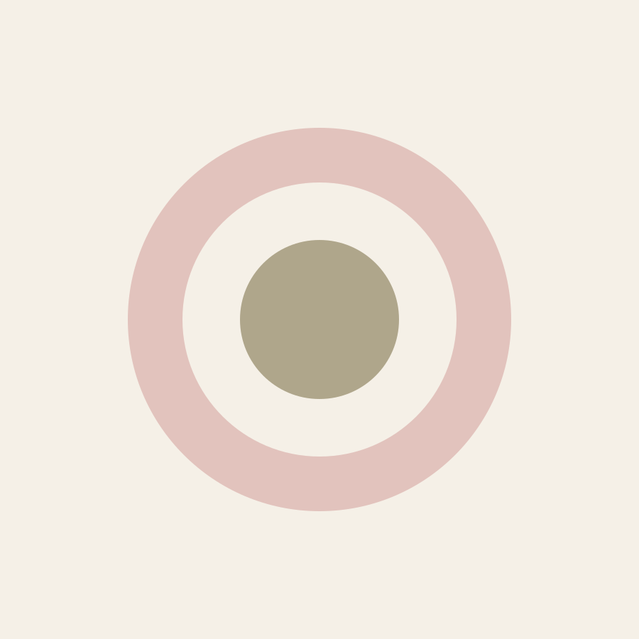
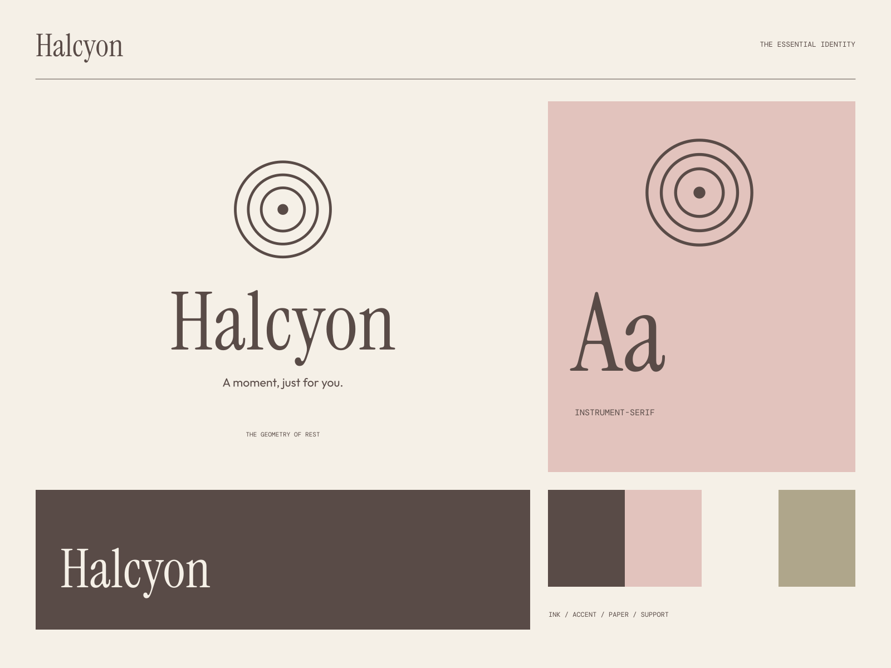

01
An unhurried beginning
Thoughtful spaces that give you room to settle.
REST / RESET / RETURN
A moment, just for you. A little space between everything.

A coherent little world
A little space between everything. A moment, just for you.
01
Thoughtful spaces that give you room to settle.
02
Small practices for making more room in the day.
03
A restorative experience with no need to rush the moment.

The point of view
Concentric pools of light, delicate layered arches, low-relief paper texture, and exceptionally spacious serif typography. The system makes a visual pause tangible.